Table of Contents
- Document Control
- Document Purpose
- Portal Overview
- User Roles & Responsibilities
- Getting Started
- Customer Registration & Onboarding
- Sales Representative
- Customer Portal
- Pricing Administrator
- Hader Manager
- Price Manager
- Commercial Director
- Portal Administrator
- End-to-End Workflows
- UAT Testing Guide
- UAT-REG-001 — Start a customer registration
- UAT-REG-002 — Complete company and contact information
- UAT-REG-003 — Upload registration documents
- UAT-REG-004 — Add a delivery location and map position
- UAT-REG-005 — Nominate administrator and submit registration
- UAT-SAL-001 — Review and approve a customer registration
- UAT-SAL-002 — Activate an approved customer account
- UAT-CUS-001 — Check application status
- UAT Testing Checklist
- Known Limitations & Pending Features
- UAT Sign-Off
- Screenshot Evidence Register
Document Control
Document Purpose
This document provides client-facing operating guidance and User Acceptance Testing (UAT) evidence for confirmed AlSafwa Cement Portal functionality. It uses only screenshots captured from the running application and separates implemented functionality from pending or unverified work.
Portal Overview
The AlSafwa Cement Portal provides role-based customer onboarding, customer self-service, Sales review, pricing administration, Hader operations, commercial approval, and portal administration capabilities. The options visible to each user depend on their authenticated role and existing permissions.
Confirmed guide areas
- Customer Registration & Onboarding
- Customer Portal
- Sales Representative
- Pricing Administrator
- Hader Manager
- Price Manager
- Commercial Director
- Portal Administrator / User Management
- End-to-End Workflows
User Roles & Responsibilities
| Role | Responsibility in this guide |
|---|---|
| Prospective Customer | Completes and submits the organization registration and checks its status. |
| Customer User | Uses the authenticated Customer Portal features permitted by the assigned customer role. |
| Sales Representative | Reviews customer onboarding applications and performs authorized Sales actions. |
| Pricing Administrator | Maintains authorized portal-owned product and pricing configuration. |
| Hader Manager | Manages authorized Hader operational workflows and configuration. |
| Price Manager | Reviews authorized pricing and Ship-to Variance workflows. |
| Commercial Director | Reviews commercial approval requests assigned to the role. |
| Portal Administrator | Manages authorized internal users and role-aware portal access. |
Getting Started
- Open the portal entry point provided for your authorized role.
- Sign in using credentials issued through the approved administration process.
- Confirm that the displayed navigation matches your assigned responsibilities.
- Follow the relevant section of this guide and record the UAT result where required.
- Use only approved test data and sign out when testing is complete.
Customer Registration & Onboarding
Audience: Prospective customer and Customer Administrator
Create an organization registration, provide company and contact details, upload required documents, define delivery locations, nominate the Customer Administrator, and submit the application for Sales review.
Procedure
- Open the customer registration page and start a new application.
- Enter the required company and contact information.
- Upload the required company documents and provide valid future expiry dates.
- Add delivery locations and select map locations where applicable.
- Enter the Customer Administrator details.
- Review the application and submit it for Sales review.
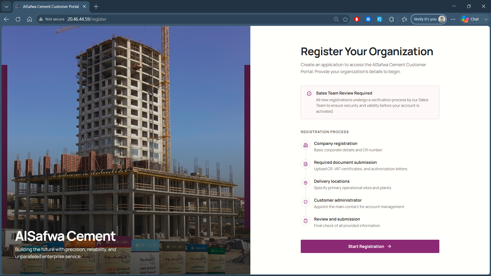
Select the registration action to begin a new organization application.
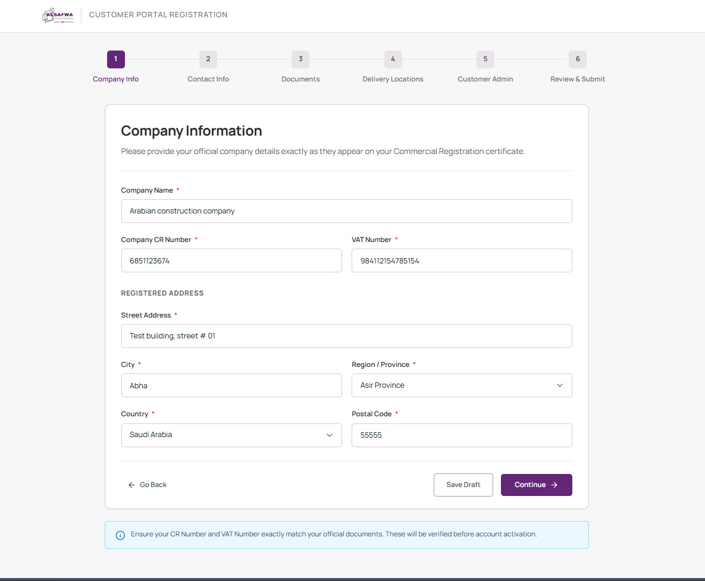
Complete the required organization and company registration information.
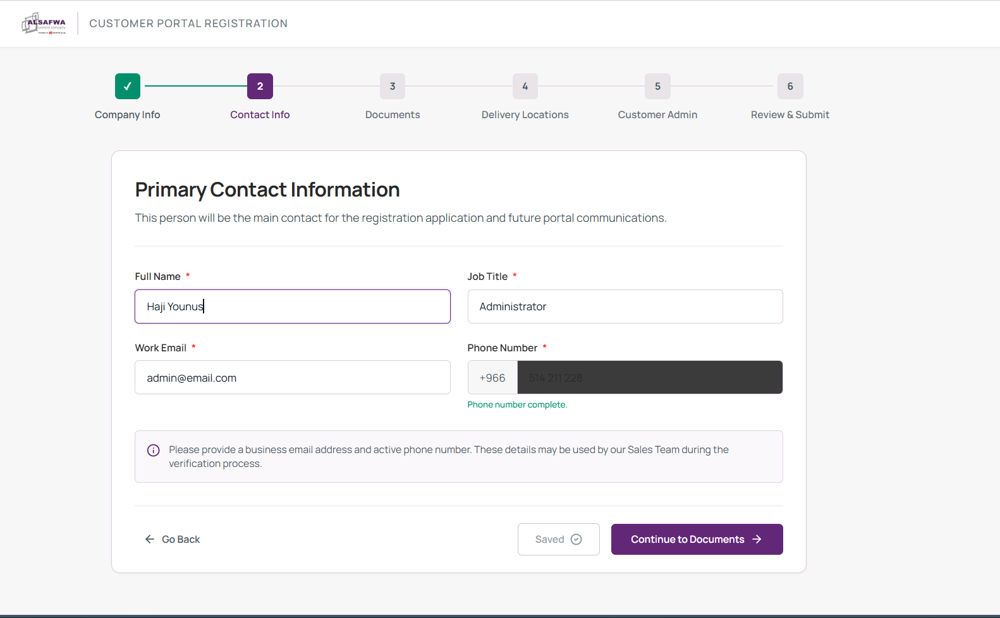
Provide the primary business contact details.
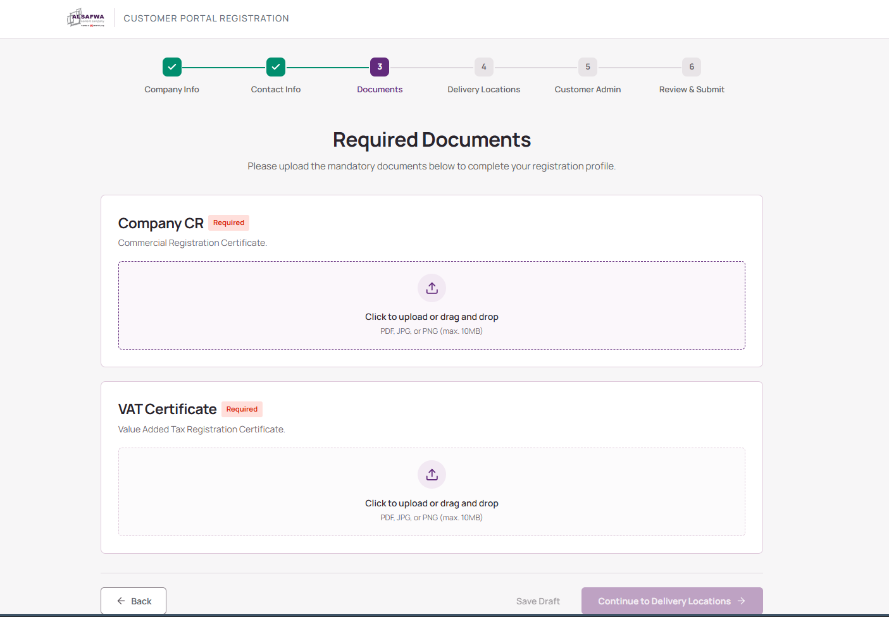
Upload the required documents and enter valid expiry dates where requested.
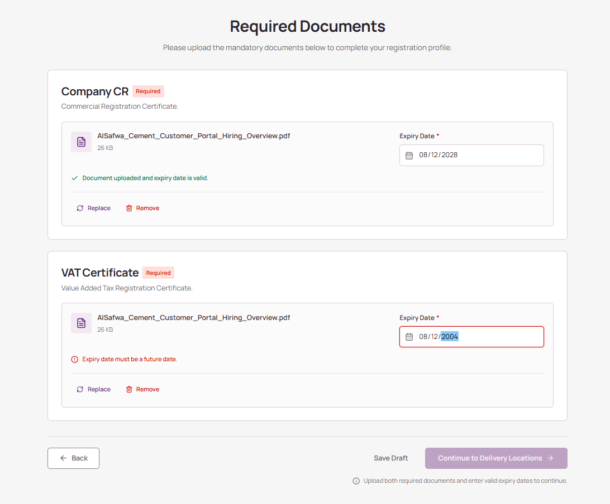
Add the operational delivery locations associated with the registration.
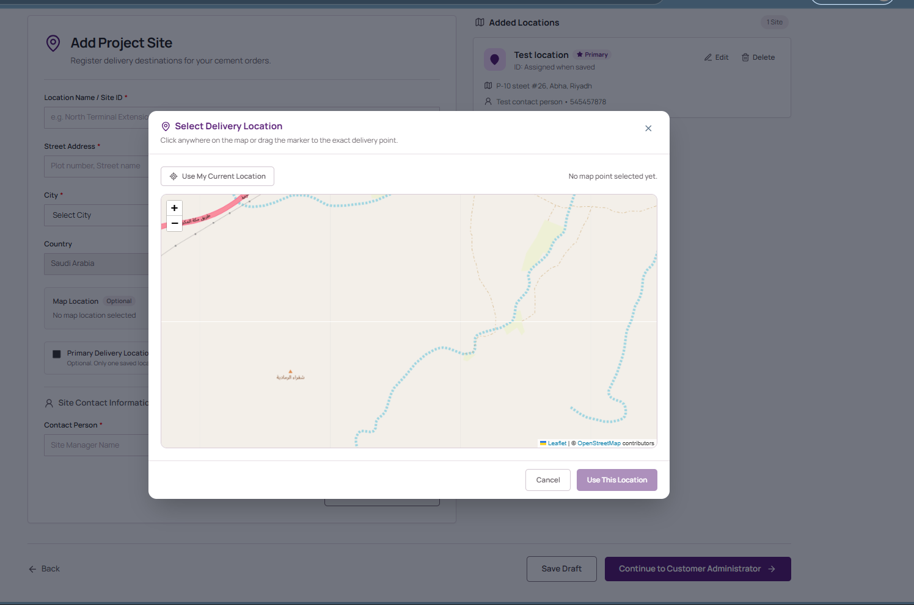
Use the map to select and confirm the correct delivery location.
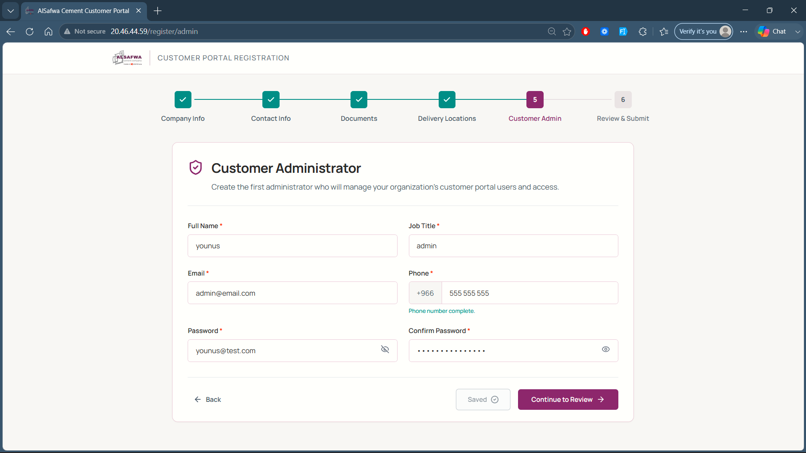
Nominate the primary administrator who will manage the customer portal account.
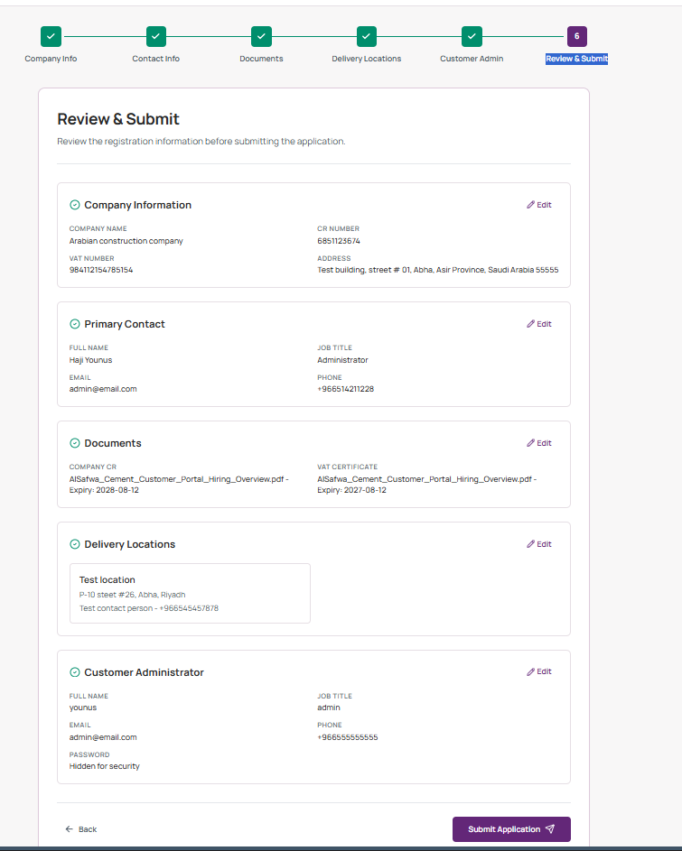
Review the entered information and submit the application for Sales review.
Sales Representative
Audience: Sales Representative
Review submitted customer registration information, approve the registration, and activate the customer account using the authorized Sales workflow.
Procedure
- Open the submitted application from the Sales applications queue.
- Review the company, contact, document, delivery-location, and administrator information.
- Apply the appropriate Sales decision.
- For an approved application, complete customer account activation using the existing activation action.
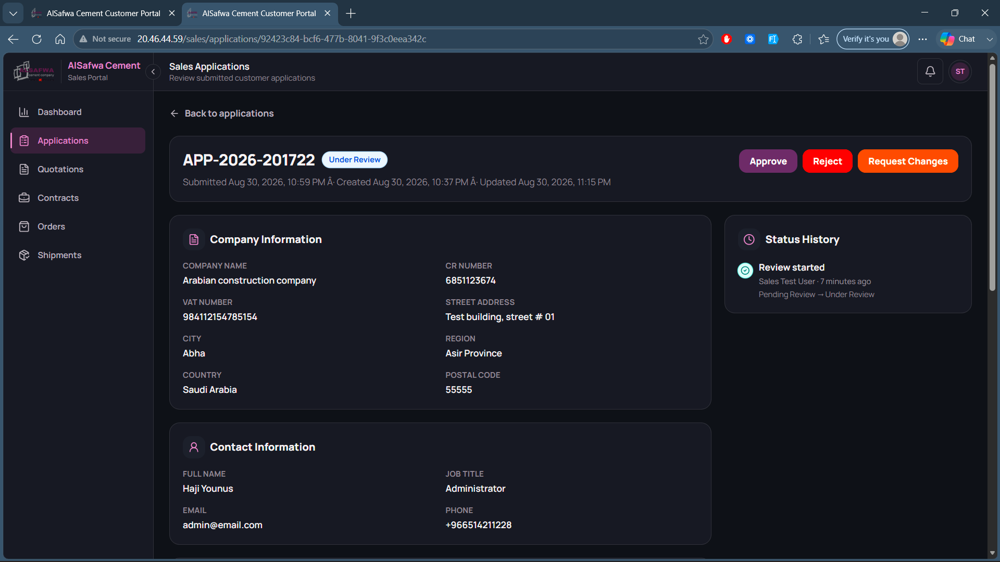
Review the complete submitted registration before making a decision.
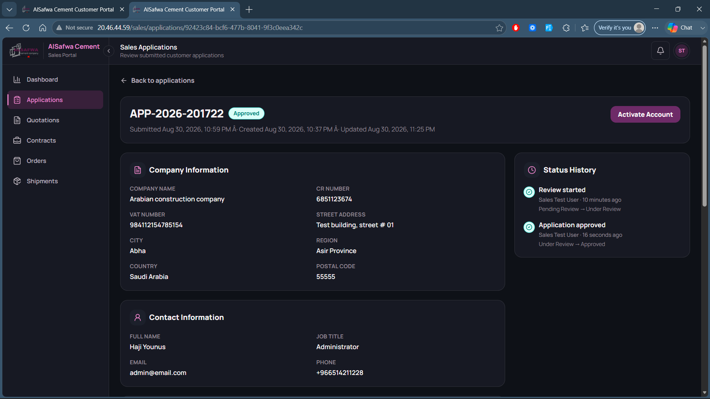
Approve the application when all required information has been verified.
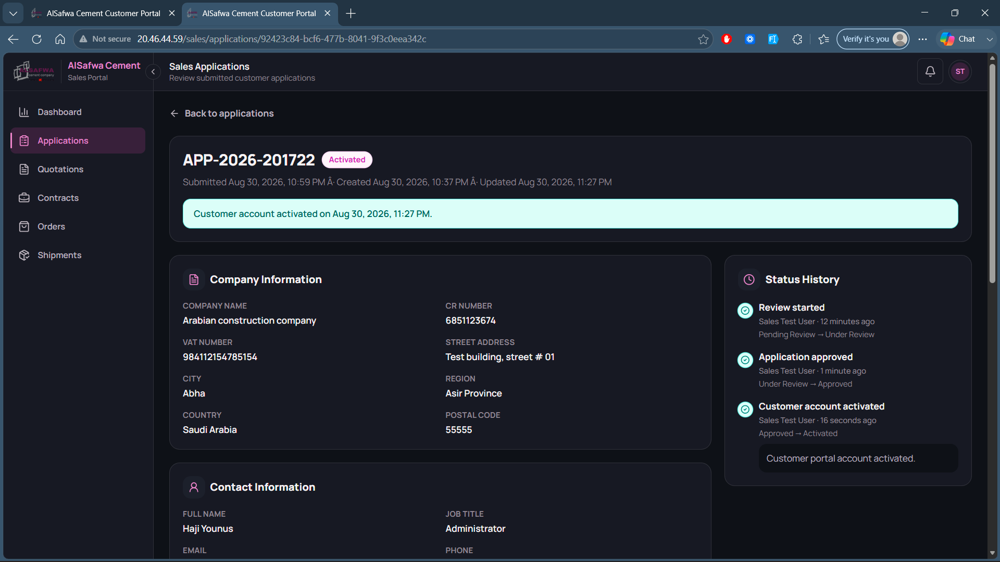
Use the authorized activation action to enable the approved customer account.
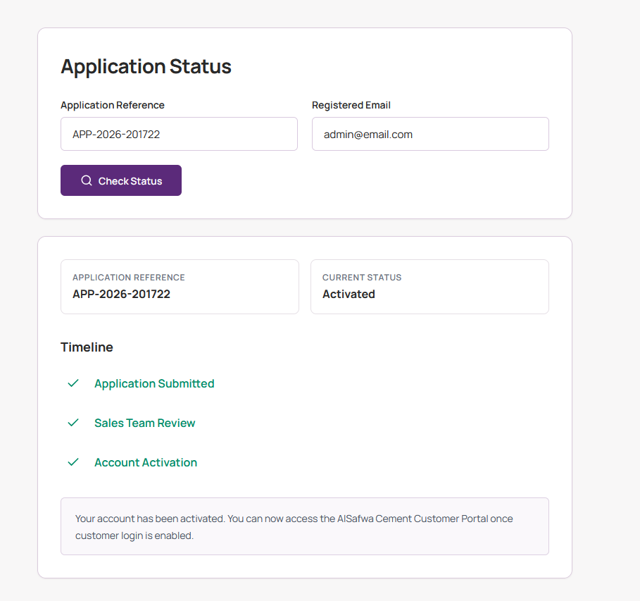
Confirm the customer-visible registration result after the Sales onboarding decision.
Customer Portal
Audience: Activated customer users
Guidance for authenticated customer features. Detailed procedures will be added as real screenshots are captured and mapped.
Pricing Administrator
Audience: Pricing Administrator
Guidance for authorized product, pricing, and related administration. Detailed procedures will be added as real screenshots are captured and mapped.
Hader Manager
Audience: Hader Manager
Guidance for authorized Hader delivery operations. Detailed procedures will be added as real screenshots are captured and mapped.
Price Manager
Audience: Price Manager
Guidance for authorized pricing review and variance workflows. Detailed procedures will be added as real screenshots are captured and mapped.
Commercial Director
Audience: Commercial Director
Guidance for authorized commercial approval workflows. Detailed procedures will be added as real screenshots are captured and mapped.
Portal Administrator
Audience: Portal Administrator
Guidance for internal user administration and role-aware access management. Detailed procedures will be added as real screenshots are captured and mapped.
End-to-End Workflows
Audience: Business process owners and UAT participants
Cross-role workflow guidance will be expanded only from verified application evidence.
UAT Testing Guide
Execute each test using an authorized test account and the stated preconditions. Record the observed result without changing the expected result. Mark the case Pass only when the actual result matches the expected result; otherwise mark Fail or Blocked and add a clear comment.
UAT-REG-001 — Start a customer registration
| Test ID | UAT-REG-001 |
|---|---|
| Module | Customer Registration & Onboarding |
| Role | Prospective customer |
| Preconditions | The registration page is available and the user is not signed in. |
| Steps |
|
| Expected Result | The registration workflow opens and allows the user to enter company information. |
| Actual Result | To be completed during UAT |
| Pass/Fail | ☐ Pass ☐ Fail ☐ Blocked |
| Comments | To be completed during UAT |
| Screenshot Evidence | 01_customer_registration_start.png |
UAT-REG-002 — Complete company and contact information
| Test ID | UAT-REG-002 |
|---|---|
| Module | Customer Registration & Onboarding |
| Role | Prospective customer |
| Preconditions | A customer registration has been started. |
| Steps |
|
| Expected Result | Valid company and contact information is retained and the registration can continue. |
| Actual Result | To be completed during UAT |
| Pass/Fail | ☐ Pass ☐ Fail ☐ Blocked |
| Comments | To be completed during UAT |
| Screenshot Evidence | 02_company_information.png 03_contact_information.png |
UAT-REG-003 — Upload registration documents
| Test ID | UAT-REG-003 |
|---|---|
| Module | Customer Registration & Onboarding |
| Role | Prospective customer |
| Preconditions | The registration has reached the document step and valid files are available. |
| Steps |
|
| Expected Result | The uploaded documents and their metadata remain associated with the registration. |
| Actual Result | To be completed during UAT |
| Pass/Fail | ☐ Pass ☐ Fail ☐ Blocked |
| Comments | To be completed during UAT |
| Screenshot Evidence | 04_documents.png |
UAT-REG-004 — Add a delivery location and map position
| Test ID | UAT-REG-004 |
|---|---|
| Module | Customer Registration & Onboarding |
| Role | Prospective customer |
| Preconditions | The registration has reached the delivery-location step. |
| Steps |
|
| Expected Result | The delivery location and selected map position are retained in the registration. |
| Actual Result | To be completed during UAT |
| Pass/Fail | ☐ Pass ☐ Fail ☐ Blocked |
| Comments | To be completed during UAT |
| Screenshot Evidence | 05_delivery_locations.png 06_set_map_location.png |
UAT-REG-005 — Nominate administrator and submit registration
| Test ID | UAT-REG-005 |
|---|---|
| Module | Customer Registration & Onboarding |
| Role | Prospective customer |
| Preconditions | All preceding registration steps contain valid information. |
| Steps |
|
| Expected Result | The application is submitted for Sales review and receives an application reference. |
| Actual Result | To be completed during UAT |
| Pass/Fail | ☐ Pass ☐ Fail ☐ Blocked |
| Comments | To be completed during UAT |
| Screenshot Evidence | 07_customer_admin.png 08_registration_review_submit.png |
UAT-SAL-001 — Review and approve a customer registration
| Test ID | UAT-SAL-001 |
|---|---|
| Module | Sales Representative |
| Role | Sales Representative |
| Preconditions | A valid customer registration is pending Sales review and the Sales user is authenticated. |
| Steps |
|
| Expected Result | The application is approved through the authorized Sales workflow. |
| Actual Result | To be completed during UAT |
| Pass/Fail | ☐ Pass ☐ Fail ☐ Blocked |
| Comments | To be completed during UAT |
| Screenshot Evidence | 09_sales_registration_review.png 10_sales_approve.png |
UAT-SAL-002 — Activate an approved customer account
| Test ID | UAT-SAL-002 |
|---|---|
| Module | Sales Representative |
| Role | Sales Representative |
| Preconditions | The customer application is approved and ready for account activation. |
| Steps |
|
| Expected Result | The customer account is activated using the approved registration information. |
| Actual Result | To be completed during UAT |
| Pass/Fail | ☐ Pass ☐ Fail ☐ Blocked |
| Comments | To be completed during UAT |
| Screenshot Evidence | 11_approve_customer_account.png |
UAT-CUS-001 — Check application status
| Test ID | UAT-CUS-001 |
|---|---|
| Module | Customer Registration & Onboarding |
| Role | Prospective customer |
| Preconditions | The user has the submitted application reference and registered email. |
| Steps |
|
| Expected Result | The current customer-visible application result is displayed. |
| Actual Result | To be completed during UAT |
| Pass/Fail | ☐ Pass ☐ Fail ☐ Blocked |
| Comments | To be completed during UAT |
| Screenshot Evidence | 12_customer_registration_result_application_status.png |
UAT Testing Checklist
| Test ID | Module | Test Case | Tester | Date | Pass | Fail | Blocked | Comments |
|---|---|---|---|---|---|---|---|---|
| UAT-REG-001 | Customer Registration & Onboarding | Start a customer registration | ☐ | ☐ | ☐ | |||
| UAT-REG-002 | Customer Registration & Onboarding | Complete company and contact information | ☐ | ☐ | ☐ | |||
| UAT-REG-003 | Customer Registration & Onboarding | Upload registration documents | ☐ | ☐ | ☐ | |||
| UAT-REG-004 | Customer Registration & Onboarding | Add a delivery location and map position | ☐ | ☐ | ☐ | |||
| UAT-REG-005 | Customer Registration & Onboarding | Nominate administrator and submit registration | ☐ | ☐ | ☐ | |||
| UAT-SAL-001 | Sales Representative | Review and approve a customer registration | ☐ | ☐ | ☐ | |||
| UAT-SAL-002 | Sales Representative | Activate an approved customer account | ☐ | ☐ | ☐ | |||
| UAT-CUS-001 | Customer Registration & Onboarding | Check application status | ☐ | ☐ | ☐ |
Known Limitations & Pending Features
The following functionality is pending or has not been verified as implemented. It must not be accepted during UAT as completed functionality:
- VAS Cloud Logistics API integration
- System Parameters
- Audit / Activity Logs
- Global Notifications (subject to implementation verification)
- Reports & Analytics (subject to implementation verification)
- Financial posting of approved Ship-to Variance charges
- Oracle Fusion integration
- Invoices / Receivables / Statements (subject to implementation verification)
UAT Sign-Off
| Approval | Name | Role | Signature | Date |
|---|---|---|---|---|
| Prepared by | ||||
| Business reviewer | ||||
| UAT approver |
Overall UAT decision: ☐ Accepted ☐ Accepted with conditions ☐ Rejected
Sign-off comments:
Screenshot Evidence Register
| Sequence | Actual filename | Guide section |
|---|---|---|
| 1 | 01_customer_registration_start.png | Customer Registration & Onboarding |
| 2 | 02_company_information.png | Customer Registration & Onboarding |
| 3 | 03_contact_information.png | Customer Registration & Onboarding |
| 4 | 04_documents.png | Customer Registration & Onboarding |
| 5 | 05_delivery_locations.png | Customer Registration & Onboarding |
| 6 | 06_set_map_location.png | Customer Registration & Onboarding |
| 7 | 07_customer_admin.png | Customer Registration & Onboarding |
| 8 | 08_registration_review_submit.png | Customer Registration & Onboarding |
| 9 | 09_sales_registration_review.png | Sales Representative |
| 10 | 10_sales_approve.png | Sales Representative |
| 11 | 11_approve_customer_account.png | Sales Representative |
| 12 | 12_customer_registration_result_application_status.png | Sales Representative |